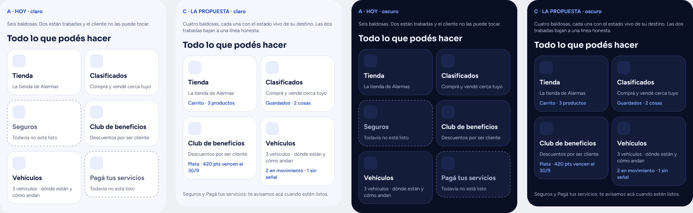
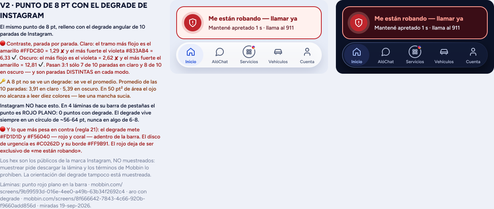
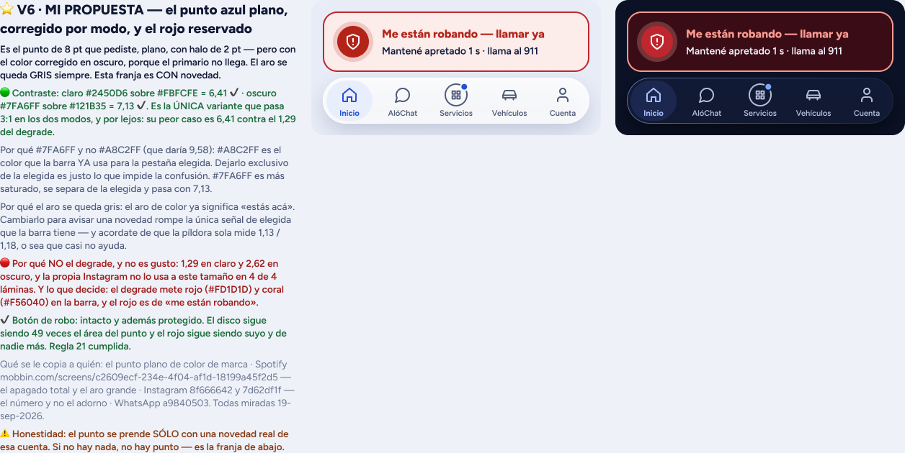
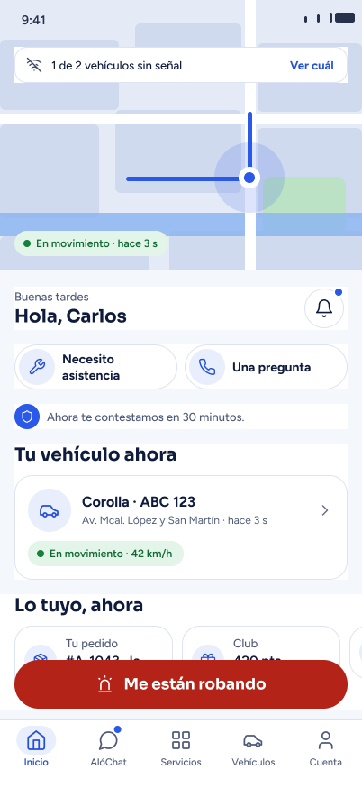

Alarmas Py · para Carlos · 19-sep-2026, medido hasta las 21:14 -03
Todo lo que hay que decidir
Once decisiones. Una ya está decidida (la grilla: opción A). Las cuatro siguientes están dibujadas y medidas y se pueden cerrar hoy. Las seis siguientes esperan desde hace días y no dependen de un dibujo. Cada una trae mi recomendación y qué pasa si no se decide.
La grilla «Todo lo que podés hacer»

| qué se midió | hoy | si se va entera | la propuesta |
|---|---|---|---|
| Alto del recorrido | 1.531 px | 1.209 px | entre las dos |
| Lo que cuesta a 320 pt con letra grande | 921 px | 0 | ≈ dos tercios |
| Baldosas que el cliente NO puede tocar | 2 de 6 | 0 | 0 |
| Destinos que quedan sin puerta | 0 | 5 | 0 |
| Usos de la ruta «Servicios» en el código | 0 · control positivo del mismo barrido: la ruta «Club» da 4 | ||
Decidido: A. La grilla se queda como está.
Yo había recomendado C. Carlos eligió A y va A. Se cierra la discusión de si la grilla se saca: no se saca.
Lo que eso implica, para que quede escrito: el ahorro de 921 px en la pantalla chica con letra grande no se cobra, y queda como deuda elegida, no como olvido. Y las dos baldosas trabadas siguen ahí: Seguros y Pagá tus servicios le siguen mostrando al cliente algo que no puede tocar.
Si querés sacar sólo esas dos y dejar el resto igual, decime «sacá las dos» y se hace: son dos nodos y no toca nada más.
El punto de aviso de «Servicios»


| qué se midió · 34 láminas de Mobbin, 9 apps, miradas el 19-sep | degrade | V6a plano |
|---|---|---|
| Se ve en la barra clara (mínimo 3,00) | 1,29 | 6,24 |
| Se ve en la barra oscura | 2,62 | 7,21 |
| El amarillo sobre la pestaña elegida | 1,15 | — |
| Píxeles rojos que mete en la barra | 36 | 0 |
| Puntos con degrade en 4 láminas de la barra de Instagram | 0 · Instagram usa el degrade en un círculo de 56-64 pt, nunca en uno de 8 | |
Recomiendo: V6a, el punto plano.
El degrade va de amarillo a violeta: un extremo siempre desaparece, en la barra clara o en la oscura. A 8 pt el ojo no lee diez colores, lee el promedio. Y mete rojo y coral en la barra, donde hoy el rojo tiene un solo dueño: «Me están robando».
Y la cuenta que cierra la discusión: el techo de cualquier color único, en las dos barras a la vez, es 4,58. El peor caso de V6a es 6,24. Ningún color solo puede ganarle.
Si no se decide: Servicios no avisa nada y una novedad real pasa desapercibida.
El botón de «Me están robando»
Los dos lotes de láminas dibujaron dos botones distintos y hay que quedarse con uno.
| la tarjeta (la que ya está en la app) | la píldora | |
|---|---|---|
| Tamaño | 370 × 84 | 370 × 54 |
| Qué dice | «Me están robando — llamar ya» y «Mantené apretado 1 s · llama al 911» | «Me están robando», nada más |
| Forma | tarjeta con disco y anillo | píldora roja maciza |

Recomiendo: la tarjeta.
La tarjeta trae la segunda línea. Sin ella el cliente toca, no pasa nada, y suelta pensando que está roto. Eso, en una emergencia, no es una diferencia de gusto.
Si no se decide: conviven las dos y el cliente ve un botón distinto según la pantalla.
El Club aparece dos veces en la misma pantalla
En la lámina de la fusión, el Club se dice arriba en la fila («420 pts vencen el 30/9») y otra vez abajo en su tarjeta («1.240 pts · 420 vencen el 30/9»). Es el mismo dato, dos veces, en la misma pantalla.
Recomiendo: dejar la tarjeta de abajo y sacarlo de la fila.
La tarjeta dice las dos mitades (cuántos puntos tenés y cuántos vencen); la fila dice sólo la mitad que asusta. Y la fila queda libre para algo que hoy no se ve en ningún lado.
Si no se decide: el cliente lee dos veces lo mismo y desconfía del número.
«Estacionado» y «Sin señal» se pintan exactamente igual
Lo verifiqué yo en el código a las 21:09, en theme/sistemaS.ts:
| «Estacionado» | «Sin señal» | |
|---|---|---|
| modo oscuro · color | #A7B2D1 | #A7B2D1 · igual |
| modo oscuro · tinta | #C9D2EA | #C9D2EA · igual |
| modo claro · los tres valores | #5A6682 · #EEF1F7 · #3D4966 | idénticos, los tres |
Qué significa: «tu auto está tranquilo en la puerta de tu casa» y «perdimos tu auto» se dibujan con el mismo color. Sólo los separa la palabra. En modo claro no hay ninguna diferencia, ni en el fondo.
Recomiendo: separarlos ya. «Estacionado» se queda con el gris tranquilo, y «Sin señal» pasa al color de atención que la app ya tiene. No hace falta inventar ningún color nuevo.
Si no se decide: el cliente no puede distinguir de un vistazo el estado bueno del estado malo.
Qué promete ZyCheck, exactamente
En la misma pantalla de compra de un auto usado conviven dos frases nuestras:
- «ZyCheck garantiza al 100 % lo que se ofrece»
- Tres líneas abajo: «Alarmas Py certifica los kilómetros recorridos desde que instalamos el equipo. No certifica el odómetro ni el kilometraje total»
Si son dos productos distintos, las dos frases pueden convivir. Pero el cliente las lee juntas, mientras decide si compra un auto.
Recomiendo: escribir en una línea qué garantiza ZyCheck y qué no, y que esa línea sea la única que aparezca en la pantalla. Es un texto que el cliente puede usar para reclamar.
Si no se decide: la app promete algo que nadie midió, en una compra de millones de guaraníes.
Los cupos de ventas y de retención, en la base nueva
El plan se mide ahora con la base oficial del tablero. Con esa base, septiembre pide números distintos a los que se le están pidiendo a los equipos:
| lo que se pide hoy | lo que pide la base oficial | |
|---|---|---|
| Altas del mes | 2.772 | 2.789 · 17 más |
| Bajas, como máximo | 1.291 | 1.149 · 142 menos |
Recomiendo: pasar los dos cupos a la base oficial ya. A ventas casi no le cambia. A retención le cambia mucho: hoy tiene 142 bajas de colchón que no existen en la base con la que se lo va a medir.
Si no se decide: retención cree que va bien todo el mes y a fin de mes no llega.
El reparto de las causas de baja: 34 · 33 · 26 · 8
Ese reparto sostiene buena parte del plan de retención, incluida la frase de que «el 92 % de las bajas tiene dueño en otra área». No está medido. El propio repositorio de Víctor lo marca como «sin fuente» y el documento de decisión lo llama «direccional, no auditada». Su origen conocido —una pasada sobre unas 624 conversaciones— da cinco categorías que suman 113 %.
Recomiendo: firmarlo como direccional, por escrito, y pedir el número propio. Sirve para orientar, no para decidir plata. Lo que no se puede es seguir citándolo como si fuera una medición.
Si no se decide: se siguen tomando decisiones de plata sobre un número que nadie midió.
La Fase Casa
Toda la parte de alarmas de casa quedó como fase 2 cuando el producto pivoteó a vehículo primero. Está anotada para revisar el 30 de septiembre.
Recomiendo: confirmar que sigue en fase 2 y poner una fecha, aunque sea lejana. Un «más adelante» sin fecha es lo que hace que un trabajo entero quede sin dueño.
Si no se decide: nadie sabe si diseñarla o no, y se pierde tiempo preguntando.
Los Figma: no hay dos cuentas, hay una sola
Esto decía que «los archivos de Alarmas Py quedaron en una cuenta de la otra empresa». Es falso, y el error era mío. Carlos no tiene dos cuentas: tiene una, y lo único que hizo fue cambiarle el correo desde la configuración de Figma, de uno personal al del otro dominio. La cuenta, el equipo, los archivos y el historial son los mismos de siempre.
Medido a las 21:31: un solo plan, un solo equipo, y él es admin. Y el identificador de ese plan empieza por team::, no por organization:: — o sea que hoy la cuenta no está dentro de ninguna organización de nadie.
Entonces no hay nada que migrar. No hay archivos que mover, ni historial que reconstruir, ni enlaces que se rompan.
Lo único que queda, y es un campo, no una mudanza
En la cuenta que guarda el diseño de Alarmas Py está escrito el correo de otra empresa. Eso no mueve ningún archivo, pero es una etiqueta que no corresponde: un dominio es de quien lo administra.
Recomiendo: cambiarle el correo, no mudar nada.
Cuando exista un @alarmas.com.py de Carlos, se pone ése — es lo que el proyecto ya tenía previsto para la firma de los commits. Mientras tanto, volver al correo personal o dejarlo como segundo correo de la cuenta. Es un campo en la configuración: los archivos, el equipo y los enlaces no se tocan.
No verificado por mí: si alguien verificara ese dominio dentro de una organización de Figma, una cuenta con ese correo podría quedar absorbida por esa organización. Hoy no lo está — lo dice el team:: de arriba —, pero no puedo comprobar desde acá qué pasa mañana con ese dominio. Por eso lo digo como algo a mirar, no como un hecho.
Si se toca producción
La regla de este proyecto dice que la producción de la empresa no se toca sin el visto bueno de Víctor. La orden de llegar al 10/10 y construir todo lo que falte puede chocar con eso en algún punto.
Recomiendo: dejar la regla como está y que yo construya todo hasta el borde. Cuando algo necesite tocar producción, te lo señalo de a uno y lo autorizás ahí, por escrito. Nada que le llegue a un cliente real se dispara como efecto secundario de construir.
Si no se decide: no pasa nada malo: yo sigo construyendo y nada llega a un cliente.
Lo que todavía no puedo medir, dicho antes de que lo preguntes
- Los colores exactos del degrade de Instagram no están muestreados: para muestrearlos habría que descargar la lámina y los términos de esa biblioteca lo prohíben. Los usados son los públicos de la marca, y la conclusión no depende de ellos.
- Las láminas están sólo en español. Faltan inglés y portugués, que es donde las palabras se parten.
- El arreglo para la pantalla más chica con letra grande está dibujado pero no aplicado en ninguna lámina.
- La batería del vehículo: la capacidad está construida y probada, pero los 8 equipos del archivo real mandan «-». Hasta que Víctor diga qué equipos la reportan y en qué unidad, ningún cliente la va a ver.
- Los cinco estados de la opción D no están dibujados: la tanda de ayer midió mucho y no dejó ninguna lámina. Los estoy dibujando yo.
Cómo contestar, en una línea
- Lo que falta de arriba: alcanza con «V6a / tarjeta / Club abajo / separar los grises» — o dónde no estás de acuerdo. La grilla ya está decidida: A.
- Las seis de abajo: contestá las que puedas ahora; las demás siguen esperando y no bloquean el dibujo.
Los dibujos completos, con más detalle, están en Figma: la página para decidir. Esa necesita cuenta de Figma; esta página no.
Página sin indexar, hecha para revisar. Los montos, patentes y nombres de las láminas son de ejemplo. Alarmas Py · 19-sep-2026.